SMART IOT SYSTEMS & CLOUD ARCHITECTURE
A complete hands‑on 5‑task engineering journey progressing from local embedded web servers to MQTT cloud brokers, IFTTT voice automation, and Firebase smart lighting with historical logging.
ESP32 Web Server & LED
The ESP32 runs a local web server; I accessed it from a browser and used the page’s ON/OFF buttons to toggle the onboard LED on GPIO 2 via HTTP requests.
What I Built
- ESP32 connected to Wi‑Fi.
- Local web server listening on port 80.
- HTML page with two buttons that send GET requests to
/onand/off. - GPIO 2 controls the onboard LED.
How It Worked
The browser sends an HTTP GET request, the ESP32 receives it and toggles GPIO 2 accordingly.
Implementation
The sketch initializes Wi‑Fi, starts WebServer on port 80, defines /on and /off routes that call digitalWrite(2, HIGH) or LOW. The HTML page contains two buttons linked to those routes.
What I Learned
- Connecting a web interface to physical hardware.
- Basic client‑server communication on an embedded device.
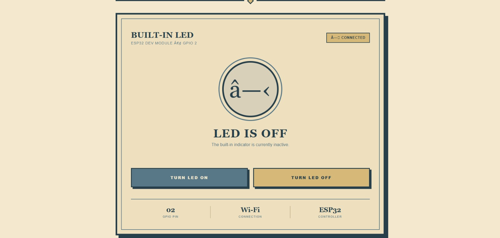
Adafruit IO & MQTT
The ESP32 connects to Adafruit IO via MQTT, subscribes to the relay feed, and controls a GPIO 23‑driven relay that switches the bulb.
What Changed
- Replaced local HTTP control with cloud‑based MQTT messaging.
- ESP32 connects to Adafruit IO and subscribes to a relay feed.
- GPIO 23 drives a 5 V relay that switches a bulb.
How It Worked
Adafruit IO dashboard publishes a value to the relay feed → MQTT broker forwards it → ESP32 receives the payload and sets GPIO 23 HIGH/LOW → relay toggles the bulb.
Implementation
The sketch uses Adafruit_MQTT_Client to connect to io.adafruit.com, subscribes to the /feeds/relay topic, and in the main loop checks for new messages; a payload of "1" or "ON" sets the relay pin LOW (active‑low) and any other value sets it HIGH.
What I Learned
- Difference between direct local communication and cloud‑mediated messaging.
- How MQTT publish/subscribe works in a real IoT project.
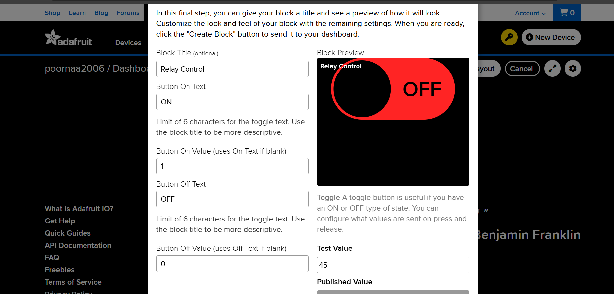
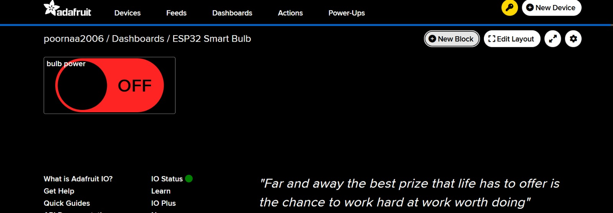
IFTTT Automation
I added IFTTT voice automation on top of the existing MQTT setup; IFTTT webhooks update the Adafruit IO relay feed, which the ESP32 receives to toggle the bulb.
What I Added
- IFTTT applets that map Google Assistant voice commands ("turn on bulb", "turn off bulb") to HTTP POSTs that update the Adafruit IO relay feed.
- The existing MQTT firmware from Task 2 remains unchanged.
How It Worked
Voice command → IFTTT webhook → Adafruit IO feed update → MQTT broker → ESP32 receives new payload → relay toggles the bulb.
What I Learned
- Automation can be layered on top of existing IoT code without firmware changes.
- Different cloud services can interoperate to extend device capabilities.
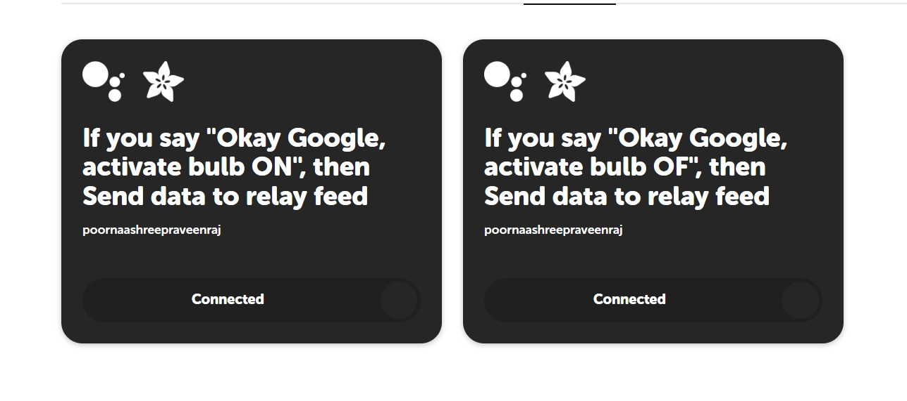
Firebase IoT Monitoring Dashboard
I built a full‑stack cloud dashboard that displays sensor data and lets me control the relay remotely.
What I Built
- ESP32 reads DHT11 (temp/humidity) and LDR (light) sensors.
- Data is uploaded to Firebase Realtime Database under
/current. - Web dashboard (hosted on Firebase Hosting) reads the same database, shows live gauges, and provides manual/auto mode switches.
- Relay (GPIO 26) is driven by commands from the dashboard.
How It Worked
Sensor → ESP32 → Firebase → Dashboard (live values). Dashboard → Firebase /control node → ESP32 reads commands → updates relay.
What I Learned
- Using a cloud database as the communication layer between hardware and a web UI.
- Integrating authentication, realtime data sync, and remote control.
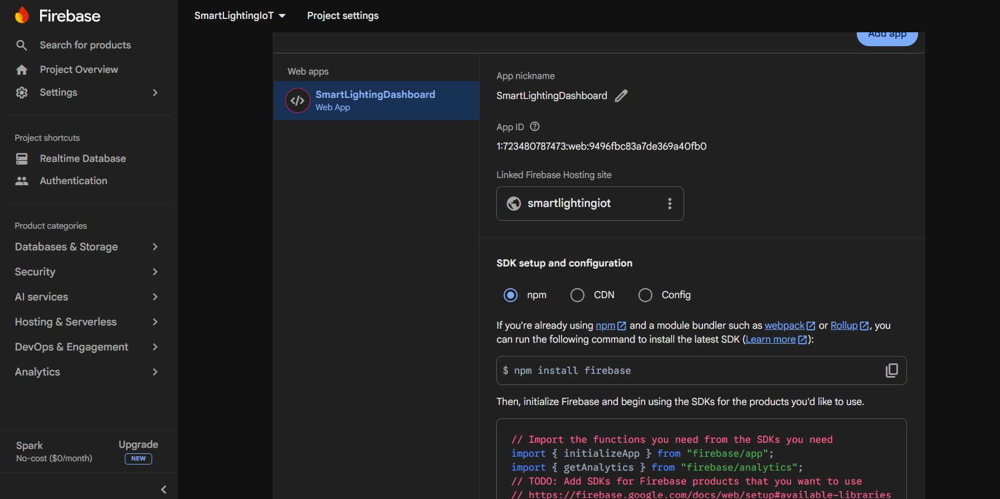
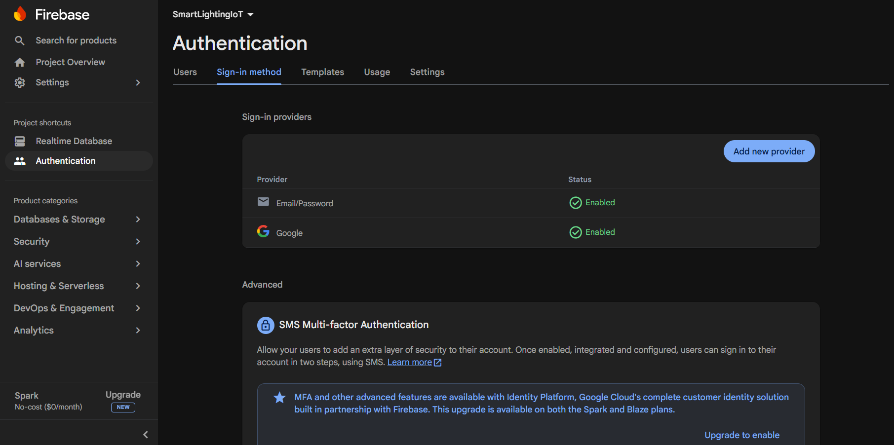
/current and /control nodes.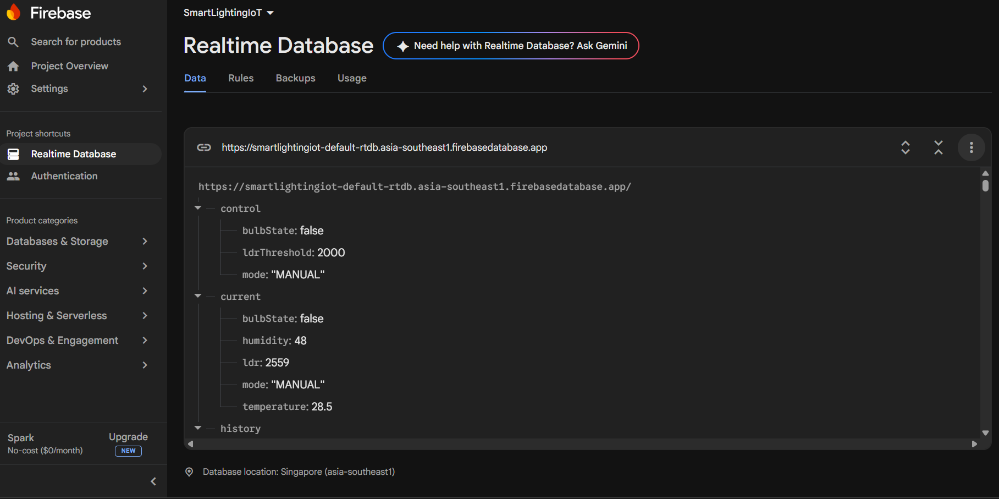
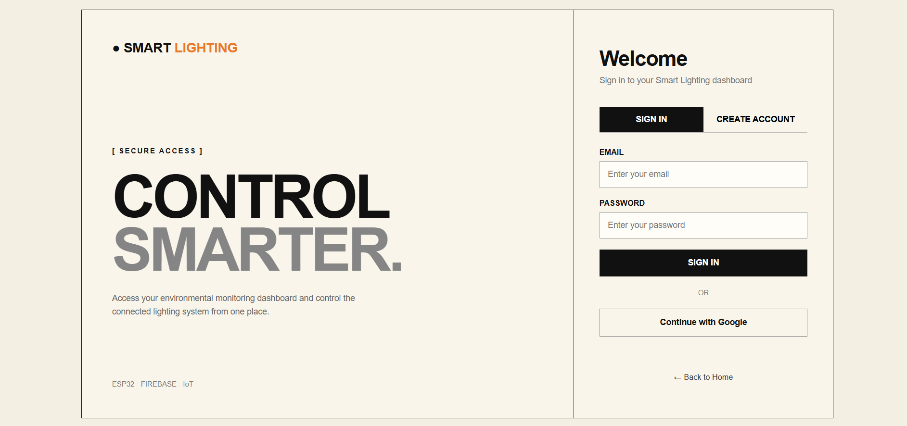
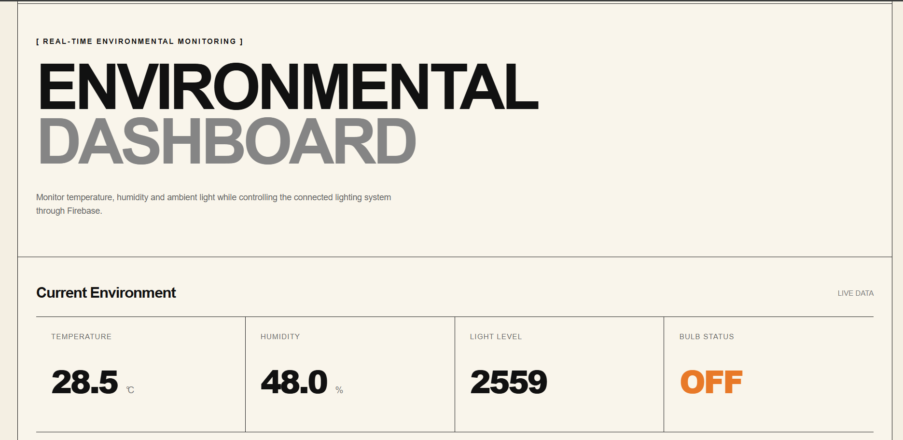
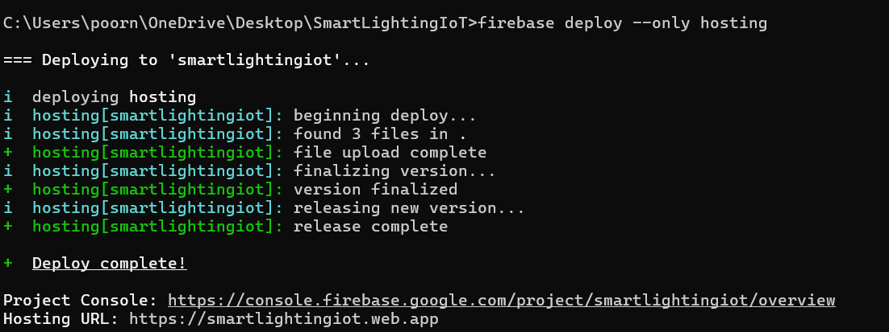
Live Application
LIVE APPLICATION: https://smartlightingiot.web.app/ ↗Firebase Logging, Automation & Data Export
I added timestamped sensor logging, automatic lighting logic, and CSV export.
What I Added
- Every 10 s the ESP32 pushes a JSON record (
temperature, humidity, ldr, bulbState, mode, timestamp) under/history. - Automatic mode uses LDR threshold to turn the bulb on/off.
- Web dashboard visualizes the history with Chart.js and offers a CSV download.
How It Worked
The ESP32 reads the sensors, updates /current, and also appends a timestamped entry to /history. The dashboard reads the history node, draws line charts, and creates a Blob CSV for download.
What I Learned
- Difference between live data display and persistent logging.
- Using historical data for automated decisions and analysis.
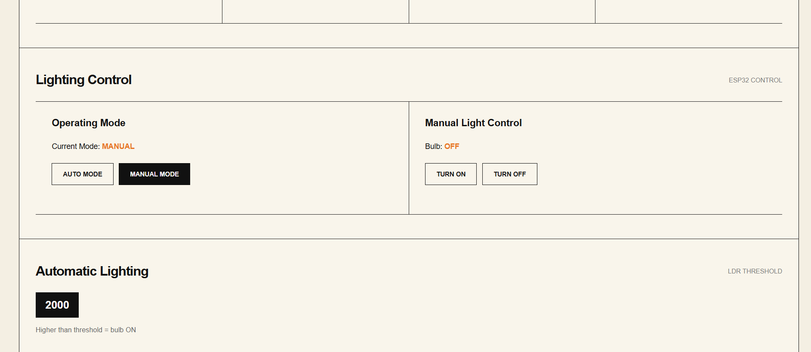
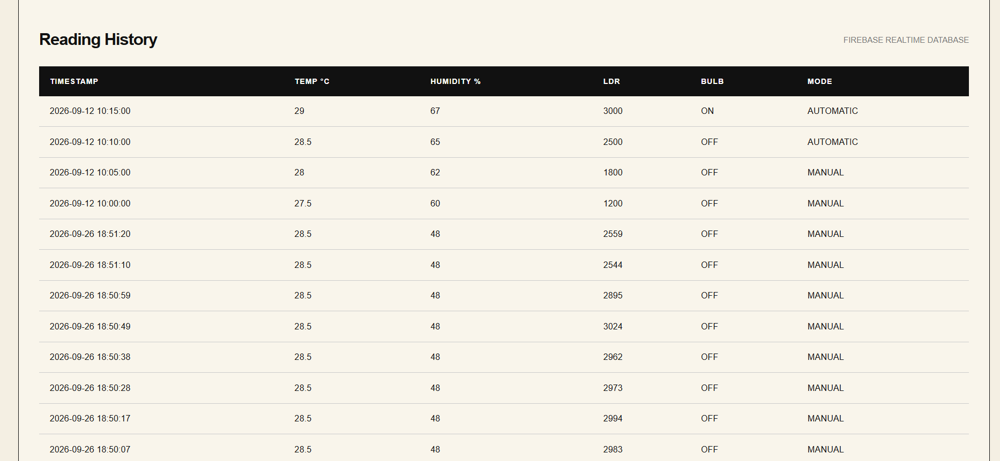
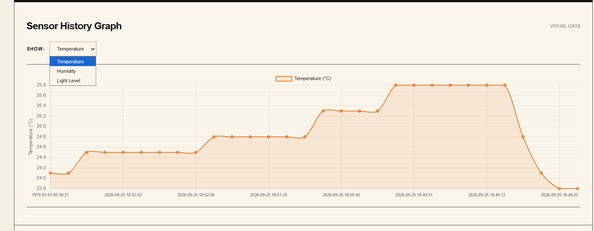